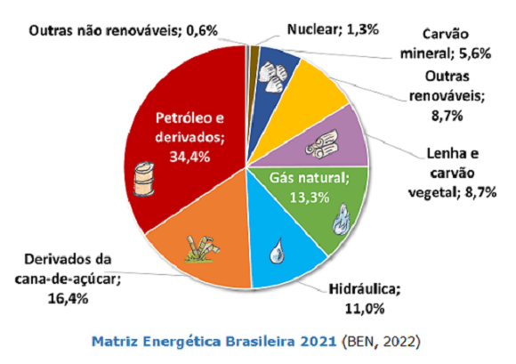
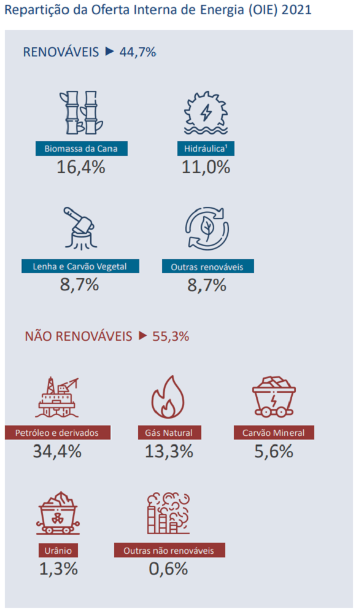
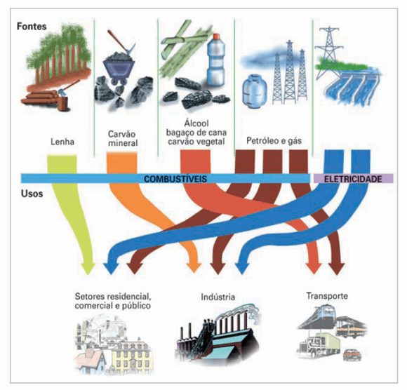
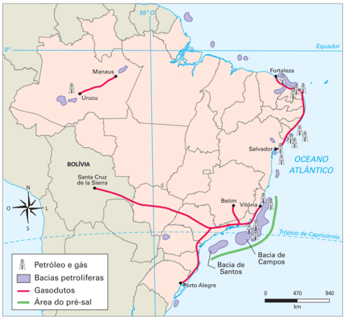
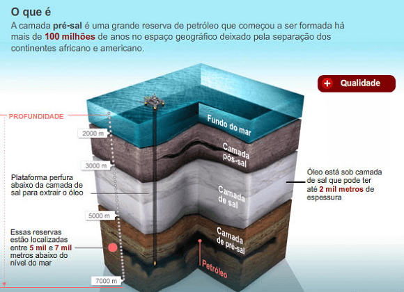
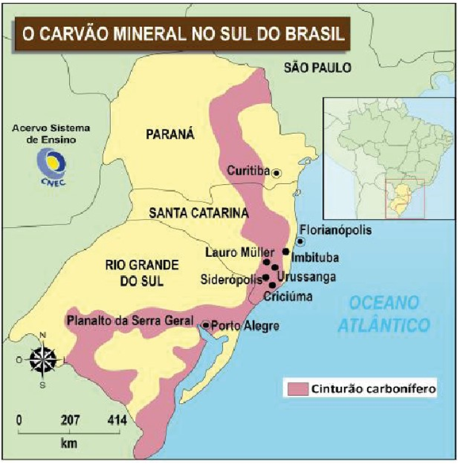
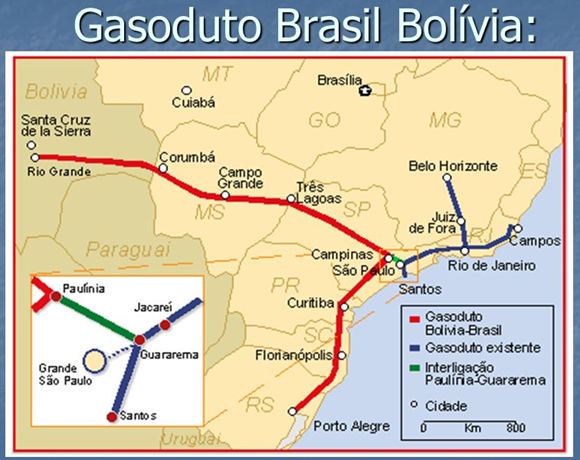

Objetivo: Compreender o papel da matriz energética no período atual, as principais questões
econômicas, políticas, territoriais e ambientais ligada à comercialização e distribuição do petróleo, do gás
natural e do carvão mineral no Brasil.
Digite seu nome
Introdução
Na aula passada, vimos os principais meios de transporte do Brasil, como o
rodoviário, ferroviário, hidroviário e aéreo.
Hoje, vamos estudar o que permite o funcionamento de toda essa engrenagem que é forma o país: as fontes de
energia, como o petróleo, carvão mineral e gás natural.
Energia, transporte e telecomunicações são os pilares da infraestrutura econômica e industrial de um país.
Eles são importantes para o progresso e também mostram o quão desenvolvido ele é ou pode vir a ser.
Questões para serem respondidas no caderno sobre o tema da aula de hoje:
1. O que é a matriz energética?
2. Quais são as principais fontes de energia no Brasil?
3. Qual é a diferença entre energias renováveis e não-renováveis?
4. O que são royalties no setor petrolífero?
5. Qual é a principal área produtora de petróleo no Brasil?
6. Como o carvão mineral é formado?
7. Quais são os impactos ambientais negativos da exploração do carvão mineral?
8. O que é a camada pré-sal?
9. Qual é a importância do gás natural para o Brasil?
10. Quais são os principais produtos derivados do petróleo?
A Energia move o Mundo
O que é Energia?
É um produto da natureza que é a base para todo o funcionamento do mundo e por que não dizer do universo. A
energia pode ser química, mecânica, térmica, elétrica, hidráulica ou de radiação
Temos que considerar dois tipos de fontes de energia. A primeira é aquele tipo de energia que se renova e faz
parte de um ciclo da natureza e não tem limite de utilização. Trata-se da Energia renováveis, como água,
ventos, biomassa e energia solar.
Há também aquele tipo de energia que possui um limite para ser utilizada, pois a velocidade de reposição
natural é muito baixa. Essas são as Energias não-renováveis, como carvão, petróleo e gás natural.
Na aula de hoje, vamos estudar as Energias não-renováveis e nas aulas seguintes veremos outras fontes da
Matriz energética brasileira. O Brasil é um país que possui acesso a diversas fontes de
energia, mas é importante saber como elas funcionam para garantir que sejam usadas de maneira correta e
eficiente.
Já a Matriz energética é o conjunto de fontes de energia utilizadas por uma sociedade em todos os seus
setores: indústrias, agricultura, residências, transportes etc. No Brasil, temos acesso a várias fontes de
energia, então vamos ver como elas se dividem nessa matriz.
Matriz Energética Brasileira 2021

Fonte: BEN (2023).
As principais fontes de energia do Brasil são:
Petróleo – fornece gasolina, óleo diesel, querosene, e gera eletricidade em algumas usinas
termelétricas;
Energia hidráulica – produz eletricidade por meio das usinas hidrelétricas;
Carvão mineral – fornece calor para os altos-fornos das indústrias siderúrgicas e gera eletricidade
em algumas usinas termelétricas;
Biocombustíveis – não podemos esquecer dos biocombustíveis, como o álcool, que é usado como
combustível para automóveis desde a década de 1970.
Outras – o gás natural, o átomo (energia nuclear), o xisto betuminoso, a lenha, o carvão vegetal e a
energia solar também podem ser considerados fontes de energia importantes para o país.
As principais fontes de energia disponíveis no Brasil, de acordo com o gráfico, estão ligados ao Petróleo em
primeiro lugar, aos derivados de cana-de-açúcar e do Gás natural.
Mas o Brasil não possui dezenas de hidrelétricas? Sim, ele possui e essas hidrelétricas formam a Matriz
elétrica do país. Ela é tão importante que vai ter uma aula só para essa questão.
Então, como ficou a repartição das fontes de energia no Brasil tendo em vista o critério de energias limpas
ou aquelas não tão limpas assim? Veja ai abaixo:

Fonte: BEN (2023, p.14).
A maior parte são fontes de energia não renováveis. É literalmente a queima do combustível,
isto é, lenha, carvão mineral, petróleo, gás natural, urânio, lixívia,
dentre outros.
×
A Lixívia ou resíduos de licor negro é outro derivado da madeira que é bastante
utilizado como combustível para a geração de energia elétrica. O licor negro,
também conhecido como lixívia negra, é um resíduo líquido proveniente do digestor após o
processo de cozimento da madeira.
Veja na imagem os destinos das principais fontes de energia no Brasil:

Fonte: Vesentini (2013).
O buraco é mais embaixo
Traduzindo esse ditado popular, a situação das fontes de energia possuem nuances e detalhes que as tornam
mais complexas do que parecem à primeira vista. Isso porque ambas as fontes tem seus problemas.
A poluição causada pelas fontes de energia não renováveis é alarmante. Os combustíveis fósseis, como
petróleo, carvão e xisto betuminoso, são os principais responsáveis pela degradação do meio ambiente,
causando danos irreparáveis nos oceanos, atmosfera, solos e rios. O risco de catástrofes devido a acidentes
em usinas nucleares é uma ameaça constante e a poluição causada por essas fontes de energia é cada vez mais
alvo de discussões internacionais.
Mesmo as fontes de energia renováveis não escapam desses impactos ambientais negativos. A lenha e o carvão
vegetal, por exemplo, são altamente poluentes e causam problemas ecológicos graves, enquanto a energia
hidráulica destrói paisagens naturais e provoca a perda de cultivos agrícolas e riquezas arqueológicas. A
energia hidrelétrica também apresenta problemas sazonais, como a menor produção durante épocas de seca.
Agora que sabemos que a energia é importante, seus tipos principais, vamos ver com mais detalhes aquele
produto que alimenta os carros, o fogão das nossas casas, as indústrias, ou seja o controverso petróleo.
Petróleo
O petróleo é uma mistura complexa de hidrocarbonetos, que é encontrada principalmente nas camadas
subterrâneas da Terra. Ele é composto principalmente por hidrocarbonetos lineares e ramificados, como o
metano, etano, propano e butano. Esses hidrocarbonetos são derivados da decomposição de matéria orgânica que
ocorreu há milhões de anos atrás.
A extração do petróleo é um processo complexo e caro, que envolve a perfuração de poços para chegar às
camadas subterrâneas onde o petróleo está presente. Uma vez extraído, o petróleo é transportado para
refinarias onde é submetido a um processo de destilação fracionada, que permite separar os diferentes
componentes do petróleo, produzindo diferentes tipos de combustíveis e outros produtos químicos.
Os principais produtos derivados do petróleo incluem gasolina e diesel para veículos, querosene para aviões,
óleos lubrificantes, óleo combustível, asfalto e outros produtos químicos. Esses produtos são amplamente
utilizados em nossa sociedade e têm uma grande importância econômica. Por exemplo, a gasolina é usada para
abastecer os automóveis e veículos de transporte, o querosene é usado para abastecer aviões, e os óleos
lubrificantes são usados para manter as máquinas e equipamentos em boas condições de funcionamento.
No Brasil, a Petrobrás foi fundada em 1953, durante o governo da Era Vargas, com o objetivo de controlar e
monopolizar a exploração de petróleo no país. A empresa tem o controle e monopólio estatal sobre as bacias
sedimentares terrestres e marítimas, incluindo as plataformas continentais. Isso significa que a Petrobrás
tem o direito exclusivo de explorar e produzir petróleo nessas áreas, o que tem um grande impacto na
economia brasileira.
O petróleo é responsável por mais de 40% do consumo nacional de energia. E adivinhem só, ele já é quase todo
produzido aqui dentro! A produção média diária é de 3 milhões de barris, volume mais do que suficiente para
atender ao consumo do país, que é de 2,5 milhões de barris.
Mas vocês sabiam que há alguns anos atrás, a gente importava quase 60% do petróleo que consumia? Era
principalmente do Oriente Médio e por isso, nossas refinarias foram construídas para esse tipo de
combustível. Mas o Brasil ainda não tem muitas refinarias e por isso, ainda temos que importar petróleo para
fazer gasolina e diesel. Olha a contradição, produzimos bastante petróleo, mas na hora de utilizá-lo ainda
dependemos da tecnologia de fora.
E a produção nacional de petróleo concentra-se principalmente no Rio de Janeiro, Espírito Santo, Rio Grande
do Norte, Bahia, Sergipe, São Paulo e Amazonas. E olha só, ela já é suficiente para atender a todo o consumo
interno do país!
E além de ser uma fonte de energia, o petróleo também é importante matéria-prima para vários tipos de
indústria, como plásticos, borrachas sintéticas, fertilizantes, inseticidas, pesticidas, medicamentos e
produtos químicos.
A camada Pré-Sal
Quais são as principais áreas produtoras de petróleo no Brasil?
Há várias áreas que produzem esse precioso combustível, desde a Bahia até o Rio de Janeiro.
A região de Campos, no Rio de Janeiro, é a principal produtora, mas há outras como a Recôncavo Baiano, a
bacia do Espírito Santo, as bacias de Sergipe-Alagoas e do Rio Grande do Norte, e a bacia sedimentar
amazônica.

Fonte: anp.gov.br
Mas o grande potencial do Brasil está nas áreas do pré-sal. Elas ficam além da plataforma continental, no
mar profundo, e são formadas por rochas sedimentares antigas, formadas há 150 milhões de anos. As reservas
de petróleo e gás natural nessas áreas são enormes, algo avaliado entre 50 a 100 bilhões de barris e de alta
qualidade, e colocam o Brasil entre os dez países do mundo com maiores reservas.

Fonte: www.naval.com.br
Imagine uma camada de sal com espessura de até 2 mil metros, escondendo reservas incríveis de petróleo e gás
natural. Isso é o pré-sal, uma descoberta recente que coloca o Brasil em uma posição privilegiada no futuro
como exportador de energia.
Para compensar os eventuais danos ao meio ambiente o governo implementa o chamado sistema de
Royalties. Mas o que são royalties?
Os royalties no setor petrolífero são pagamentos feitos pelas empresas de exploração ao Governo Federal como
compensação financeira por possíveis danos ambientais causados durante o processo de extração. A quantidade
de royalties é baseada na produção e rentabilidade de cada local de extração, e o dinheiro arrecadado pode
ser destinado a áreas como Educação, Saúde e Políticas Sociais.
Quais são as outras fontes de energia não renováveis mais significativas no Brasil? É o que vamos ver agora
com o carvão mineral e o gás natural.
Teste seu conhecimento
Qual é a principal riqueza mineral encontrada no petróleo?
Carvão Mineral
Vamos regressar no tempo de volta ao primeiro ano e revisitar um dos nossos primeiros assuntos: o Carvão
Mineral. O carvão é uma velha conhecida da humanidade, sendo utilizada há séculos como fonte de energia. Mas
você sabe como ele é formado? Bem, é uma história longa que começa há milhões de anos atrás, quando a Terra
era um verdadeiro paraíso para as plantas. Elas cresciam e morriam sem parar, e com o passar do tempo, toda
essa matéria orgânica acabou se acumulando e se compactando. Com altas pressões e temperaturas, a matéria
orgânica foi transformada em hidrocarbonetos e, voilà, nasceu o carvão.
Mas não pense que é só cavar a terra que o carvão aparece, não é tão fácil assim. Ele pode ser encontrado em
minas subterrâneas ou em superfície, e para extraí-lo é preciso muito esforço e tecnologia. Mas, vale a
pena? Claro que sim! O carvão é utilizado em inúmeras atividades cotidianas, como na geração de energia
elétrica que permite iluminar nossos lares, ou na produção de aço, que é usado na construção de prédios,
pontes, carros e até mesmo panelas (é, a sua panela preferida provavelmente já teve uma vida como carvão).
Mas, claro, tudo tem um preço, e o carvão não é diferente. Além de ser uma fonte de energia não renovável, o
uso do carvão também gera emissões de gases poluentes, o que pode prejudicar o meio ambiente. Por isso, é
importante buscarmos fontes de energia mais limpas e renováveis. Mas, por enquanto, o carvão ainda é uma
fonte importante e presente no nosso cotidiano. Então, na próxima vez que você ligar a luz, pense no carvão
mineral e agrade por ele ter sido formado há milhões de anos atrás.
Vamos conhecer mais sobre a história do carvão mineral no Brasil! As reservas mais abundantes desse recurso
não renovável encontram-se no sul do país, remontando à época Paleozoica, há milhões de anos atrás. Em
comparação com o resto do mundo, o Brasil detém apenas 1,2% das reservas mundiais, mas ainda assim, 90%
dessas reservas estão localizadas no estado do Rio Grande do Sul.
Porém, mesmo com esse grande potencial, o consumo nacional de carvão ainda é muito baixo, representando
apenas 0,5% do consumo global. Isso se deve a algumas restrições, como os altos teores de cinza e enxofre
presentes na maioria do carvão brasileiro.
Mas não se preocupe, ainda existe esperança! Os estados do Rio Grande do Sul e Santa Catarina são os
principais responsáveis pela produção de carvão mineral no país, e é em Santa Catarina que encontramos as
jazidas de melhor qualidade, incluindo o único carvão coqueificável do Brasil.
×
Coqueificável: que pode ser transformado em coque por processos economicamente
viáveis. O coque é um resíduo sólido da destilação do carvão (carbono praticamente puro), mais
rico que este em capacidade calorífica e, portanto, mais adequado para produzir calor nos
altos-fornos.
Vamos conhecer um pouco mais sobre a região Vale do Tubarão, onde se encontram as cidades de Criciúma, Lauro
Müller, Siderópolis e Uruçanga. Esse é o local onde se extrai a maior parte do carvão brasileiro, que é
transportado por ferrovia até o porto de Imbituba e, em seguida, enviado para as indústrias siderúrgicas do
sudeste do país. Já no Rio Grande do Sul, o vale do rio Jacuí é a principal área produtora de carvão.

É interessante ver como um recurso tão antigo ainda é tão importante na nossa vida cotidiana, não é mesmo?
Vamos continuar a explorar e aprender mais sobre as fontes de energia e sua importância!
O outro lado da Moeda (ou do Carvão)
A produção e utilização do carvão como fonte de energia é uma atividade altamente prejudicial ao meio
ambiente. Desde a extração das jazidas, passando pelo transporte e chegando à combustão, os impactos
socioambientais são intensos e de graves consequências. A ocupação do solo exigida pela mineração afeta
diretamente a vida da população, prejudicando recursos hídricos, fauna e flora locais. Além disso, o
barulho, a poeira e a erosão provocados pela extração são fontes de incômodo para a população. O
transporte também é fonte de poluição sonora e afeta o trânsito. No entanto, o maior e mais alarmante
impacto é a quantidade de gases como nitrogênio e dióxido de carbono, principalmente o CO2, emitidos
durante a combustão do carvão. Segundo estatísticas, o carvão é responsável por entre 30% e 35% das
emissões totais de CO2 na atmosfera, sendo o CO2 o principal agente do efeito estufa. Portanto, é
fundamental que busquemos alternativas mais sustentáveis de produção de energia.
Teste seu conhecimento
Quais são as principais fontes de gás natural no Brasil?
Gás Natural
Também temos o gás natural, que é uma fonte de energia fóssil formada a partir da decomposição de matéria
orgânica acumulada no subsolo há milhões de anos. Esse processo de decomposição, com o auxílio de altas
pressões e temperaturas, transformou a matéria orgânica em hidrocarbonetos gasosos, como metano. O gás
natural é extraído de reservatórios subterrâneos e é utilizado como combustível para gerar energia elétrica
e calor, além de ser um importante insumo em diversas indústrias.
Se Você não sabia, agora já sabe!
O gasoduto Bolívia-Brasil é uma das maiores infraestruturas de transporte de gás natural da América do
Sul, conectando a Bolívia, país produtor de gás, ao Brasil, um dos maiores consumidores da commodity na
região. Foi inaugurado em 1999 e desde então tem sido uma fonte importante de gás para o Brasil.

No entanto, o gasoduto também tem sido fonte de conflitos políticos e econômicos entre os dois países. Em
2007, a Bolívia, liderada pelo então presidente Evo Morales, anunciou o aumento significativo do preço
do gás vendido ao Brasil, o que gerou tensões entre os dois países. Em 2009, o governo boliviano revogou
a concessão para a empresa brasileira responsável pela exploração e transporte de gás, o que resultou em
uma briga judicial entre os dois países.
Além disso, há também questões ambientais envolvidas no gasoduto, incluindo a degradação da floresta
amazônica e a interrupção da vida de comunidades indígenas que dependem da região para sua
sobrevivência.
Em resumo, o gasoduto Bolívia-Brasil é uma infraestrutura importante para o abastecimento de gás no
Brasil, mas também é uma fonte de conflitos políticos, econômicos e ambientais entre os dois países.
Teste seu conhecimento
Quais são as consequências negativas da exploração do carvão mineral para o meio ambiente no Brasil?
Não existe pergunta boba! A Ciência é feita de perguntas!
P:
Qual a relação entre o Petróleo e o desenvolvimento do Brasil?
R:
O petróleo é considerado o combustível mais importante do século XX e continua a ter uma grande influência
na economia mundial. No Brasil, o petróleo tem sido fundamental para o desenvolvimento capitalista, desde a
década de 1950, quando o país começou a explorar suas reservas.
Com a produção crescente de petróleo, o Brasil se tornou um dos maiores produtores da América Latina,
atraindo investimentos estrangeiros e estimulando a economia. A indústria do petróleo é responsável por
grande parte da arrecadação de impostos, o que possibilita ao governo investir em infraestrutura, educação e
saúde. Além disso, a produção de petróleo no Brasil também gerou empregos e crescimento econômico em regiões
onde antes havia pouca atividade econômica.
No entanto, o petróleo também tem seus desafios, como a exploração em áreas sensíveis e a possibilidade de
vazamentos, o que pode trazer graves consequências ambientais e sociais. Além disso, a dependência excessiva
do petróleo pode ser perigosa para a economia brasileira, já que a oferta deste recurso é finita e sua
produção pode ser afetada por mudanças políticas e econômicas.
Em resumo, o petróleo é um dos principais motores do desenvolvimento capitalista no Brasil, mas é importante
considerar os desafios e riscos associados à sua exploração e produção. A busca por fontes de energia
renovável e sustentáveis é cada vez mais necessária para garantir um futuro equilibrado e sustentável para o
país e para o mundo.
P:
Qual a importância do gás natural para o Brasil?
R:
O Brasil é um dos maiores produtores de gás natural na América Latina, com produção diária de cerca de 120
milhões de metros cúbicos.
O gás natural é uma fonte de energia renovável e limpa, comparado a outros combustíveis fósseis como o
petróleo e o carvão.
O Brasil tem vastos recursos de gás natural, especialmente na região de Campos de Santos, que é considerado
um dos principais centros de produção de gás do país.
O gás natural é utilizado como fonte de energia para geração de eletricidade, aquecimento e cozinha
doméstica, bem como como insumo para a indústria, especialmente na produção de fertilizantes e plásticos.
Nos últimos anos, o Brasil tem investido em infraestrutura para a importação e distribuição de gás natural, o
que tem contribuído para a diversificação da matriz energética do país e para a redução de sua dependência
de outros combustíveis fósseis.
P:
Quais são os problemas da exploração do carvão mineral para o meio ambiente no Brasil?
R:
A exploração do carvão mineral pode causar vários problemas ao meio ambiente no Brasil, alguns deles
incluem:
Degradação do solo: As minas de carvão podem causar erosão do solo e degradação de florestas,
prejudicando a biodiversidade e o equilíbrio ecológico.
Emissões poluentes: A queima do carvão libera gases poluentes, como dióxido de enxofre, óxido de
nitrogênio e partículas, que contribuem para a poluição do ar.
Escassez de água: As minas de carvão requerem grandes quantidades de água para seu funcionamento, o
que pode levar a escassez de água na região.
Impacto sobre comunidades locais: As minas de carvão podem afetar as comunidades locais, causando a
perda de terras e fontes de renda, além de impactar a saúde pública.
Resíduos tóxicos: O carvão é processado em usinas termelétricas, gerando resíduos tóxicos que
precisam ser gerenciados de forma adequada para evitar contaminação de rios, lagos e lençóis
subterrâneos.
Mudanças climáticas: A queima de carvão libera grandes quantidades de gases de efeito estufa, como o
dióxido de carbono, que contribuem para as mudanças climáticas.
Por essas e outras razões, é importante que a exploração do carvão seja feita de maneira responsável e
sustentável, buscando minimizar seus impactos negativos sobre o meio ambiente e as comunidades locais.
Desafio - Jornada do herói: Recompensa (Apanhando a Espada)
Na aula passada, passamos pela Provação, ou seja, o aposento mais profundo da Caverna Oculta, o maior
desafio e o adversário mais terrível enfrentado pelo herói.
Hoje, vamos colher os frutos dessa Jornada com a Recompensa.
Como sempre, formem seus grupos e use a criatividade para lidar com esse desafio.
Instruções
Forme um grupo com 5-6 estudantes;
Leia o texto abaixo e discuta com seu grupo o conteúdo das questões;
Faça anotações em seu caderno;
Seja criativo, use os conhecimentos que você já possui sobre o Desafio.
Tempo da atividade: 25 minutos.
Recompensa (Apanhando a Espada) (9)
Leia a passagem abaixo:
“Nós, Buscadores, nos olhamos com sorrisos. Ganhamos o direito de sermos chamados de heróis. Por
Nossa Tribo, enfrentamos a morte, sentimos o gosto dela, e apesar disso estamos vivos. Das
profundezas do terror, subitamente saltamos para a vitória. É hora de encher nossas barrigas vazias
e levantar nossas vozes em torno da fogueira para cantar nossos feitos. Esquecemos velhas feridas e
ressentimentos. A história de nossa jornada já começa a ser tecida.
Você se separa dos outros, estranhamente quieto. Nas sombras dançantes, lembra-se dos que ficaram
pelo caminho, e observa alguma coisa. Você está diferente. Parte de você também morreu e algo novo
nasceu no lugar. Você e o mundo nunca mais serão os mesmos. Isto também faz parte da Recompensa por
ter enfrentado a morte”.
O herói venceu uma crise, como por exemplo, Nathan Drake, da franquia Uncharted, que enfrentou muitos perigos para encontrar artefatos históricos valiosos. Agora, ele está experimentando as consequências de sua vitória, recebendo reconhecimento e recompensa. A Recompensa vem após a Provação e pode ter várias formas e propósitos.
Celebração
A metáfora dos caçadores sobreviventes à morte e que trouxeram a caça, ilustra bem esse estágio da Recompensa da Jornada do Herói. É preciso celebrar e repor as energias, seja com uma festa, como a comemoração da equipe de Lara Croft após encontrar a cidade perdida de Paititi, em Tomb Raider. Ou descansar para recuperação, como a pausa que Marcus Holloway, de Watch Dogs 2, precisa para se recuperar após uma missão perigosa.
Muitas histórias têm, nesse momento, alguma cena em volta de uma fogueira ou similar, em que o herói e seus companheiros se reúnem para fazer a revisão dos acontecimentos, como a conversa de Joel e Ellie, de The Last of Us, ao redor de uma fogueira após uma viagem tensa. É o momento em que todos gostam de contar vantagens sobre seus feitos.
É nesse momento que os heróis se tornam realmente heróis após essa crise. Antes eles eram aprendizes. Geralmente nesse ponto da história aparece uma calmaria ou uma cena de amor ou casamento sagrado, como a relação entre Ellie e Dina, em The Last of Us Part II.
Tomando posse
Um dos aspectos essências dessa etapa é que o herói toma posse daquilo que veio procurar. Os caçadores de tesouro pegam o ouro, como o tesouro encontrado por Nathan Drake em Uncharted 2: Among Thieves. Os espiões roubam o segredo, como Sam Fisher, de Splinter Cell, roubando informações confidenciais. O herói inseguro adquire a autoestima, como a evolução de Marcus Holloway em Watch Dogs 2.
O herói toma posse de sua arma, como a adaga que Lara Croft adquire em Tomb Raider, ou recebe uma bênção final, como a bênção que Aloy, de Horizon Zero Dawn, recebe após completar uma missão importante. O símbolo da arma representa a imagem de determinação do herói, forjada em fogo e banhada em sangue.
Iniciação
Os heróis surgem de sua Provação para serem reconhecidos como especiais e diferentes, parte de um reduzido grupo de eleitos com feitos dignos de serem recompensados, pois até mesmo enganaram a morte.
Geralmente os heróis são promovidos com novos cargos ou entram uma organização devido aos seus feitos notáveis. Os heróis descobrem que possuem agora novos “poderes”, novas habilidades e novas percepções.
Em jogos de RPG como World of Warcraft, o personagem passa por uma Provação para se tornar um herói, sendo recompensado com novos cargos e habilidades. Em Final Fantasy VII, o personagem Cloud passa por uma jornada de autoconhecimento, descobrindo novas habilidades e sua verdadeira identidade. Em The Elder Scrolls V: Skyrim, o personagem principal é escolhido como o Dovahkiin, um herói escolhido para salvar o mundo, e adquire novos poderes e habilidades ao longo da jornada.
E, por último, temos a história de God of War IV, em que a recompensa é concedida a Kratos depois de ele completar sua jornada e superar todos os desafios e obstáculos colocados em seu caminho. Kratos é recompensado com o conhecimento e a sabedoria adquiridos ao longo de sua jornada, bem como com a possibilidade de enfim encontrar a paz e a redenção. Além disso, ele é recompensado com o poder e a força adquiridos ao derrotar deuses e monstros poderosos, o que o torna ainda mais formidável como guerreiro.
Questões para pensar a história do jogo:
- De que tomam posse os heróis de sua história depois de enfrentarem a morte ou seus maiores medos ou desafios?
- Sua história muda de direção? Releva-se alguma nova meta ou plano de ação na fase de Recompensa?
- Seu herói percebe que mudou? Existe um autoexame ou a percepção de uma consciência ampliada? Ele aprendeu a lidar com suas próprias falhas internas?
SANTOS, Patrícia Cardoso dos (et al.). Enciclopédia do Estudante: geografia do Brasil:
aspectos físicos, econômicos e sociais. São Paulo: Moderna, 2008.
FRANK, Bruno José Rodrigues. Geografia econômica. Londrina: Editora e Distribuidora
Educacional S.A., 2018.
VESENTINI, José William. Geografia: o mundo em transição. Ensino médio. 2. ed. – São
Paulo: Ática, 2013.
VOGLER, Christopher. A jornada do escritor: estruturas míticas para escritores.
Tradução de
Ana Maria Machado. -
2.ed. Rio de Janeiro: Nova Fronteira, 2006.
SKOLNICK, Evan. Video game storytelling: what every developer needs to know about
narrative
techniques.New Yoirk: Watson-Guptill, 2014.